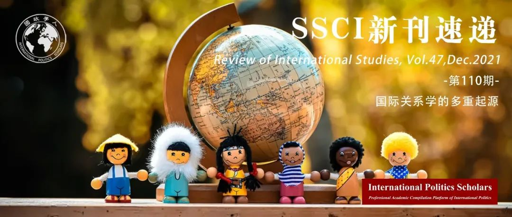

收录于合集 #新刊速递 123个

期刊简介
《国际研究评论》（ Review of International Studies ）是由剑桥大学出版社代表英国国际研究协会出版且同行评审的国际关系学术期刊，其前身为 British Journal of International Studies (1975 - 1980) 。该期刊致力于反映全球政治的性质变化和新兴的政治挑战，旨在为国际社会搭建一个可供辩论的平台用以讨论当下紧迫的全球议题。根据Journal Citation Report显示，2020年该期刊的影响因子为2.73。

本期目录
1. 特刊介绍：国际关系的多重起源
Introduction to the Special Issue: The multiple births of International Relations
2. 中国国际研究的诞生
The births of International Studies in China
3. 巴西国际关系学的基础与发展
The foundation and development of International Relations in Brazil
4. 拉客，骑摩托，建设和平：利比里亚战后谋生重建的叙述
Hustling, cycling, peacebuilding: Narrating postwar reintegration through livelihood in Liberia
5. 面对封闭社区：对超越战争范式的暴力进行去殖民化批判
Confronting the gated community: Towards a decolonial critique of violence beyond the paradigm of war
6. 什么是成功的秘密行动？评估外交事务中未经承认的干涉主义
What constitutes successful covert action? Evaluating unacknowledged interventionism in foreign affairs
7. 重塑国际秩序，即为何叙利亚民族国家没有消失
Re-enacting the international order, or: why the Syrian state did not disappear
8. 国际关系中欧洲中心主义的无意识复制：对欧洲中心主义进行批判的政治学
Inadvertent reproduction of Eurocentrism in IR: The politics of critiquing Eurocentrism
9. 跨国的视而不见：国际机构与难民跨境活动
Transnational blindness: International institutions and refugees’ cross-border activities
01
特刊介绍：国际关系学的多重起源
题目： Introduction to the Special Issue: The multiple births of International Relations
作者： Vineet Thakur，莱顿大学讲师。Karen Smith，莱顿大学讲师。
摘要： 通常情况下，学科历史会参与到主观记忆作为事实的生产。本期特刊以现有学术研究为基础，通过将地理焦点扩展到 西方以外来重新思考国际关系学的学科历史，并探讨国际关系学如何将自己定义为一个有别于世界不同地区的其他研究领域的、独立的知识体系。 这些“别史”（alternative history）使得我们意识到只有通过主权、帝国、联邦、尤其是“国际”这一相互冲突的概念等关键概念的跨国传播，国际关系学方有可能发展为一门全球性学科。此外，这里别史也给知识的目的和其产生的政治带来关注，并允许民主化和话语多元化。
Disciplinary histories are, by default, complicit in the production of subjective memories as truth. This Special Issue builds on the existing scholarship on rethinking IR’s disciplinary history by expanding its geographical focus beyond the West, and explores how IR came to define itself as a self-contained body of knowledge that is distinct from other fields of study in different parts of the world. These alternative histories enable us to appreciate that the development of IR as a global discipline was only possible through a trans- national circulation of key ideas such as sovereignty, empire, Commonwealth and, especially, competing notions of the ‘international’. In addition, they bring attention to the purpose of knowledge and the politics of its production, and allow for both democratisation as well as discursive plurality.
02
中国国际研究的诞生
题目： The births of International Studies in China
作者： Yih-Jye Hwang，莱顿大学助理教授。
摘要： 本文探讨了在东亚长期占据主导地位的 以中国为中心（Sinocentric） 的世界秩序背景下，国际研究作为一门科学学科是如何在中国出现和发展的。首先，该学科十分依赖于历史、法律和政治研究，并非常注重对 中国融入威斯特伐利亚体系 的调查。其此，国际关系研究基于解决问题（problem- solving）的方法以应对中国在现代化进程中的不同时期遇到的各种问题。第三，中国国际研究的历史发展对于当代中国大陆和台湾的学术研究有深远的影响，包括中国大陆最近激增的建立“中国学派”国际关系理论的尝试以及中国台湾自发接纳西方国际关系学。作为总结，本文认为仍有一个发展国际关系学的中国当地机构存在。尽管中国的国际关系学者在 学科制度化 的进程中吸收了大量的西方知识，这一机构仍然存在。
This article explores how International Studies as a scientific discipline emerged and developed in China, against the background of a Sinocentric world order that had predominated in East Asia for a long time. The argument of this article is threefold. First, the discipline relied heavily on historical, legal, and political studies, and placed a heavy focus on the investigation of China’s integration into the Westphalian system. Second, studies of International Relations were grounded in a problem-solving approach to various issues China was facing at various times in the course of modernisation. Third, the historical development of International Studies in China has had a profound impact on the current IR scholarship in both the PRC and Taiwan, including the recent surge of attempts to establish a Chinese School of IR theory in China and the voluntary acceptance of Western IR in Taiwan. By way of conclusion, the article suggests that there is still an indigenous Chinese site of agency with regards to developing IR. This agency exists despite the fact that in the course of the disciplinary institutionalisation of IR Chinese scholars have largely absorbed Western knowledge.
03
巴西国际关系学的基础与发展
题目： The foundation and development of International Relations in Brazil
作者 ： Carlos R. S. Milani，里约热内卢州立大学教授。
摘要： 本文旨在帮助批判性地理解国际关系学是如何作为巴西现代项目中的一个社会科学领域建立起来的。本文作者认为20世纪巴西国际关系学的基础与发展一方面与外交政策密切相关，另一方面与其国家地缘政治思维密切相关（特别是二战之后）。在其轨迹之中，巴西的国际关系学受到以下因素的影响:对外交政策的国内和系统决定因素的分析、历史解释、对国家权力组成部分的研究、对外交及其对国家发展贡献的研究、对决策过程的分析，以及在较小程度上对认知方法的分析。本文由三部分组成：首先，作者简要介绍了巴西国际关系学中的地缘政治传统；其次，作者讨论了巴西的国际关系学发展，强调了外交官的作用，来自人文社科知识分子的关键贡献，以及最终在80年代第一代国际关系学者的出现。最后，作者分析了该领域的制度化，其数量和质量的增长，并提供了一些关于其近期组织的数据。
This article aims to contribute to the critical understanding of how International Relations (IR) was built as a social science field within Brazil’s modern project. I argue that the foundation and the development of IR in Brazil in the twentieth century is closely associated with foreign policy, on the one hand, and with the national geopolitical thinking, particularly in the aftermath of the Second World War, on the other. In its trajectory, Brazil’s IR has been influenced, among others, by the analysis of domestic and systemic determinants of foreign policy, historical interpretations, the study of the components of state power, stud- ies of diplomacy and its contribution to the country’s development, the analysis of decision-making pro- cesses and to a lesser extent, cognitive approaches. This article is organised around three sections. First, I present a brief history of the geopolitical tradition in Brazil’s IR. Second, I discuss IR development in Brazil, stressing the role of diplomats, the key contribution of intellectuals coming from social and human sciences, and finally the emergence of the first generations of IR scholars in the eighties. Third, I analyse the institutionalisation of the field, its quantitative and qualitative growth, presenting some data on its organisation in recent times.
04
拉客，骑摩托，建设和平：利比里亚战后谋生重建的叙述
题目： Hustling, cycling, peacebuilding: Narrating postwar reintegration through livelihood in Liberia
作者： Jaremey R. McMullin，英国圣安德鲁斯大学国际关系学院高级讲师。
摘要： 青年战士起源于利比里亚的商业摩托车行业，并在其发展中发挥了主导作用。本文整理了利比里亚一个在战后转为商业摩托车手的青年战士Edwin Nyankoon讲述的关键见解，围绕青年谋生手段、身份和战后政治的概念，构建和平建设的叙事。本文将研究问题和数据分析锚定到研究参与者自己的语言和讲述的战后经历上，通过强调叙事和主题引导方法论的必要性，为研究青年机构的各种文献做出贡献。文章运用对日常和平的见解将拉客解释为自下而上的和平建设，与前战斗人员自上而下的和平建设说法相反。后者基本上没有将青年行为者视为建设和平的代理人，而是将他们塑造成麻烦制造者，并从犯罪和威胁的角度解释他们的谋生活动。此外，文章认为拉客也构成了一种建设和平的方式。作为和平建设的拉客不仅仅是一种应对策略或和平的指标，还具有表演性：这被其追随者认为是相关的、形象的、矛盾的，并且是促进和平的，即使（并且可以说是因为）局外人将其构建为否定和平。该分析将机构、社会关系、性别认同和集体安全问题化，因为它们与和平进程中的前战斗人员和受冲突影响的青年有关。
Ex-combatant youth originated the commercial motorcycling sector in Liberia and have played a dominant role in its development. This article collates key insights narrated by one of Liberia’s young ex-combatants-turned-commercial motorcyclists, Edwin Nyankoon, to build narrative accounts of peace building around conceptualisation of youth livelihood, identity, and politics after war. The article contributes to diverse literatures on youth agency by emphasising the need for narrative and subject-led methodologies that anchor research questions and data analysis to research participants’ own language and narrated experiences of post war. It applies insights about everyday peace to interpret hustling as bottom-up peacebuilding, in opposition to dominant top-down peacebuilding accounts of ex-combatants. These latter accounts largely fail to see youth actors as peacebuilding agents, constructing them instead as troublemakers and interpreting their livelihood activities in terms of criminality and threat. Additionally, it argues that hustling also constitutes a peacebuilding style. More than a coping strategy or an indicator of peace, hustling-as-peacebuilding-style is performative: relational, embodied, contradictory, and recognisable to its adherents as peace-promoting even if (and arguably because) outsiders construct it as peace-negating. This analysis problematises agency, social relations, gendered identity, and collective security as they relate to ex-combatant and conflict-affected youth during peace processes.
05
面对封闭社区：对超越战争范式的暴力进行去殖民化批判
题目： Confronting the gated community: Towards a decolonial critique of violence beyond the paradigm of war
作者： Henrique Tavares Furtado，西英格兰大学国际关系与政治高级讲师。
摘要： 本文调查了 Dussel、Maldonado-Torres 和 Mbembe 的作品，这些作品代表了去殖民思想领域的一种趋势，即假定战争和营地的模板是当代世界暴力的原型记录。文章将此视为欧洲中心主义词汇（战争范式）的残余，力图将在该领域占主导地位的战争语言转变为福利语言。这篇文章将封闭式社区 （GC）以及（再）创造的必要性，而不是营地和消除逻辑，作为理解现代/殖民暴力的新模板。本文超越军国主义意象，展示了一种暴力形式，这是对在封闭式社区内不断寻求便利生活的回应。为此，本文提出了无序方言的概念，即居住在封闭社区中的两个主体之间被迫而不安的相遇：主顾（享受轻松生活的房主）和仆人（种族化的服务人员）。在封闭社区中，暴力之所以出现是为了回应这种（不）方便的遭遇而采取主顾和仆人都误认为不合适的方式。
This article investigates the works of Dussel, Maldonado-Torres, and Mbembe as representatives of a tendency in the field of decolonial thought to assume the templates of warfare and the camp as the archetypal registers of violence in the contemporary world. Identifying this focus as the remnant of a Eurocentric vocabulary (the paradigm of war), the article proposes a shift from the language of warfare predominant in the field to a language of welfare. The article turns to the gated community (GC), instead of the camp, and the imperatives of (re)creation, instead of the logics of elimination, as new templates with which to make sense of modern/colonial violence. Moving beyond militaristic imagery, the analysis shows a form of violence that emerges as a response to the endless search for a life of convenience inside the walls of the GC. To this end, the article advances the concept of the dialect of disarrangement, the enforced but uneasy encounter between two subjectivities that inhabit the GC: the patrons (the homeowners who consume the easy life) and servants (the racialised service staff). In the GC, violence emerges in attempts to respond to this (in)convenient encounter via misrepresentations of both patrons and servants as out of their place.
06
什么是成功的秘密行动？评估外交事务中未经承认的干涉主义
题目： What constitutes successful covert action? Evaluating unacknowledged interventionism in foreign affairs
作者： Rory Cormac，英国诺丁汉大学国际关系教授；Calder Walton，哈佛大学肯尼迪学院应用历史项目助理主任；Damien Van Puyvelde，英国格拉斯哥大学情报和国际安全讲师。
摘要： 长期以来，秘密行动一直是国际关系中备受争议的工具。然而，公众对这一国家秘密活动是否有效，及其更根本的成功要素知之甚少。本文提炼了秘密行动的成功标准，并研究了其如何被视为成功。作者将秘密行动成功的概念模型提炼为一种社会结构，并通过“中央情报局行动的黄金时代”的案例加以阐释。成功的社会建构性质对评估，使用和防御秘密活动都具有重要意义。
Covert action has long been a controversial tool of international relations. However, there is remarkably little public understanding about whether it works and, more fundamentally, about what constitutes success in this shadowy arena of state activity. This article distills competing criteria of success and examines how covert actions become perceived as successes. We develop a conceptual model of covert action success as a social construct and illustrate it through the case of ‘the golden age of CIA operations’. The socially constructed nature of success has important implications not just for evaluating covert actions but also for using, and defending against, them.
07
重塑国际秩序，即为何叙利亚民族国家没有消失
题目： Re-enacting the international order, or: why the Syrian state did not disappear
作者： 贾尼斯·格兹博斯基（Janis Grzybowski）
摘要： 在叙利亚内战最激烈的时期，许多观察家认为叙利亚民族国家正在崩溃、分裂或解体。然而，它从未真正消失。自2011年以来，叙利亚民族国家面临着日益严峻的挑战——从外部分裂导致的内部崩溃到在“伊斯兰国”的冲击下面临的国家消亡。重新审视这些挑战为考察危机中国家地位和国际秩序的重塑提供了难得的机会。事实上，叙利亚和伊拉克面临的挑战与地区内外其他国家的不同之处在于，它们解体的可能性不仅被视为对一个霸道政权或某个特定国家的威胁，而且被视为对以国家为基础的国际秩序本身的威胁。政权会倒台，国家也会在内部“崩溃”或被新的国家取代，但只有当以疆土边界为基础的国家形式受到另一种形式的威胁时，国际秩序才将受到根本性的质疑。本文认为，叙利亚之所以能够幸存，不仅仅是因为其主权的合法性或外国政权的支持，还因为支持叛乱的国家担心叙利亚民族国家消失于伊斯兰圣战主义者所主张的具有跨国性质的“哈里发”国之中，从而更情愿叙利亚在巴沙尔·阿萨德的统治下继续存在。因此，国家和国际秩序的重塑最终是相互联系的。
At the height of the Syrian civil war, many observers argued that the Syrian state was collapsing, fragmenting, or dissolving. Yet, it never actually vanished. Revisiting the rising challenges to the Syrian state since 2011 - from internal collapse through external fragmentation to its looming dissolution by the ‘Islamic State’-provides a rare opportunity to investigate the re-enactment of both statehood and international order in crisis. Indeed, what distinguishes the challenges posed to Syria, and Iraq, from others in the region and beyond is that their potential dissolution was regarded as a threat not merely to a - despised - dictatorial regime, or a particular state, but to the state-based international order itself. Regimes fall and states ‘collapse’ internally or are replaced by new states, but the international order is fundamentally questioned only where the territorially delineated state form is contested by an alternative. The article argues that the Syrian state survived not simply due to its legal sovereignty or foreign regime support, but also because states that backed the rebellion, fearing the vanishing of the Syrian nation-state in a transnational jihadist ‘caliphate’, came to prefer its persistence under Assad. The re-enactment of states and of the international order are thus ultimately linked.
08
国际关系中欧洲中心主义的无意识复制：对欧洲中心主义进行批判的政治学
题目： Inadvertent reproduction of Eurocentrism in IR: The politics of critiquing Eurocentrism
作者： 朱丽叶·托莱（Juliette Tolay）
摘要： 对欧洲中心主义的研究已经成为后殖民国际关系理论的一个特征。即使研究已经有意识地对世界政治作出后欧洲中心主义的理解，但在这类文献中欧洲中心主义的回弹依然值得特别关注。本文认为，尽管现有的研究成果强调了许多欧洲中心主义在今天依然存在的原因，但该主义仍未被充分地识别并概念化。特别是，为什么一些对超越欧洲中心主义有既得利益的政策行为者会在不经意间复制欧洲中心主义？本文建议区分不同类型的无意复制，特别强调修辞批评、解构、去中心化和去等级化成为了不经意复制和部分调整欧洲中心主义的不同批判方式。为了说明这一情况，本文考察了土耳其的移民政策，并描述了土耳其执政精英是如何公开宣称需要颠覆欧洲中心秩序，但却在实践中又复制了这一秩序。
The study of Eurocentrism has become a hallmark of postcolonial International Relations theories. Of particular concern in this literature has been the resilience of Eurocentrism despite conscious efforts to move towards a post- Eurocentric understanding of world politics. This study argues that while existing works have highlighted many of the reasons why Eurocentrism persists today, it has not been sufficiently identified and conceptualised. In particular, why some policy actors, who have a vested interest in moving beyond Eurocentrism, inadvertently reproduce Eurocentrism? This article proposes to distinguish between different types of inadvertent reproductions. In particular it highlights rhetorical critique, deconstruction, decentring and dehierarchising, as different ways to critique, inadvertently reproduce and partially modify Eurocentrism. To illustrate this situation, this article looks at Turkey’s migration policies and documents how Turkish governing elites have openly claimed the need to upend the Eurocentric order, yet have reproduced it in practice.
09
跨国的视而不见：国际机构与难民跨境活动
题目： Transnational blindness: International institutions and refugees’ cross-border activities
作者： 亚历山大·贝茨（Alexander Betts）、小俣直彦（Naohiko Omata）和奥利维尔·斯特克（Olivier Sterck）
摘要： 位于埃塞俄比亚- 索马里边界附近的多洛阿多难民营一直以来都是联合国难民署为难民和收容社团创造生计的一个关注重点。这一背景呈现了一个分析难题：尽管跨境活动对难民的社会经济生活很重要，但这样的活动却从制度上被谋求帮助难民的国际机构所忽略并受到阻碍。本文探讨了难民的跨境活动如何以及为什么被国际机构系统性地忽视。作为理论起点，它借鉴了后发展（post- development）研究文献，尤其是詹姆斯·弗格森对国际机构如何经常误解其目标群体的机构和战略这一问题做出的探析。然而，与弗格森主要运用福柯式的方法论与认识论相反，本文采用了混合方法，并强调援助工作者的机构、官僚政治，以及关于国际机构的国家导向型生计计划与难民自己的跨境经济战略脱节的政治经济学。
The Dollo Ado refugee camps, located close to the Ethiopian-Somali border, have been a major focus for the United Nations Refugee Agency (UNHCR)’s attempts to build livelihoods for refugees and the host community. The context presents an analytical puzzle: despite the importance of cross-border activity to refugees’ socioeconomic lives, such transnational activity has been institutionally invisible to and hindered by the international agencies seeking to assist them. The article explores how and why refugees’ cross- border activities have been systematically ignored by international institutions. As a theoretical starting point, it draws upon the post- development literature, and notably the work of James Ferguson, which explores how international institutions frequently misunderstand the agency and strategies of their subject populations. However, contra Ferguson’s predominantly Foucauldian methodological and epistemologically approach, the article adopts a mixed methods approach, and emphasises the agency of aid workers, bureaucratic politics, and political economy in its account of the disjuncture between international institutions’ state-centric livelihoods programmes and refugees’ own cross-border economic strategies.
编译 | 黎开朗 唐一鸣 杨影淇 赵旌宏
审校 | 赵旌宏
排版 | 王慧瑜 彭雯昕

国政学人
支持学术公益与知识传播
微信扫一扫赞赏作者 __赞赏
已喜欢，对作者说句悄悄话
取消 __
发送给作者
发送
最多40字，当前共字
上一页 1/3 下一页
长按二维码向我转账
支持学术公益与知识传播
受苹果公司新规定影响，微信 iOS 版的赞赏功能被关闭，可通过二维码转账支持公众号。